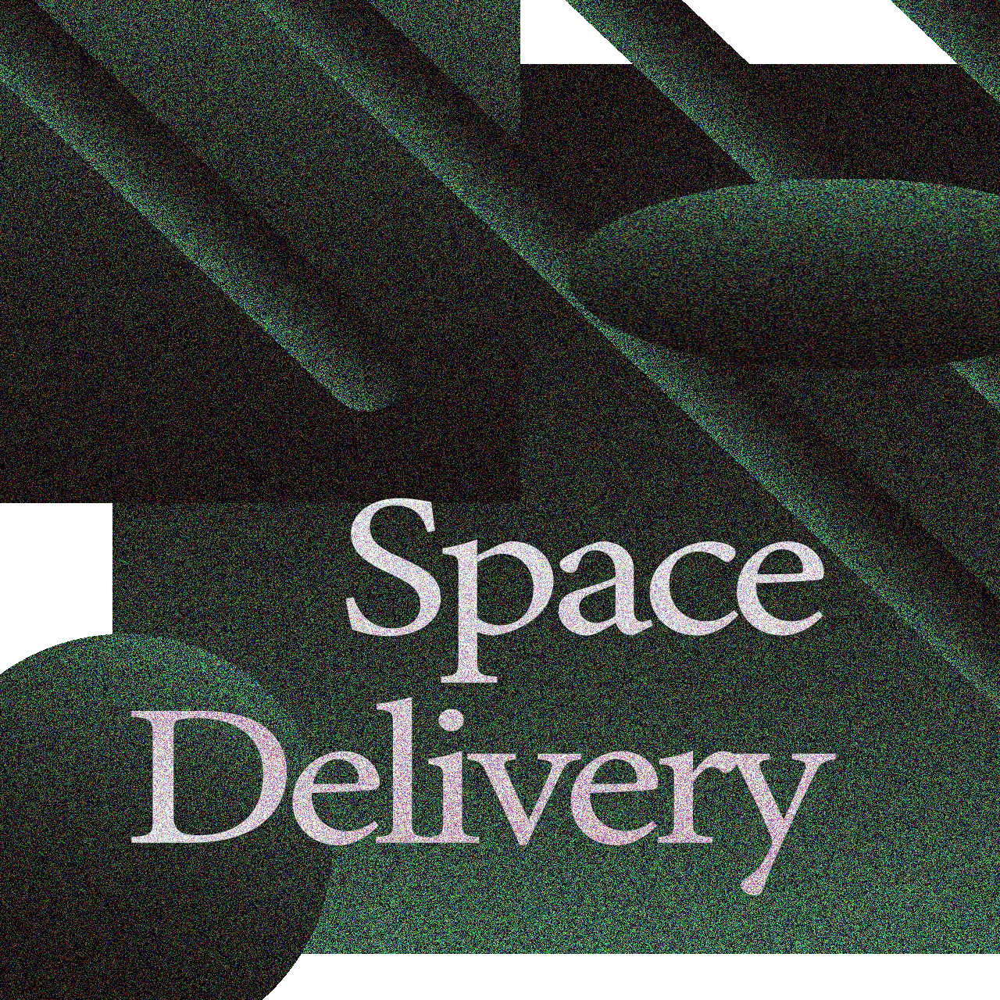
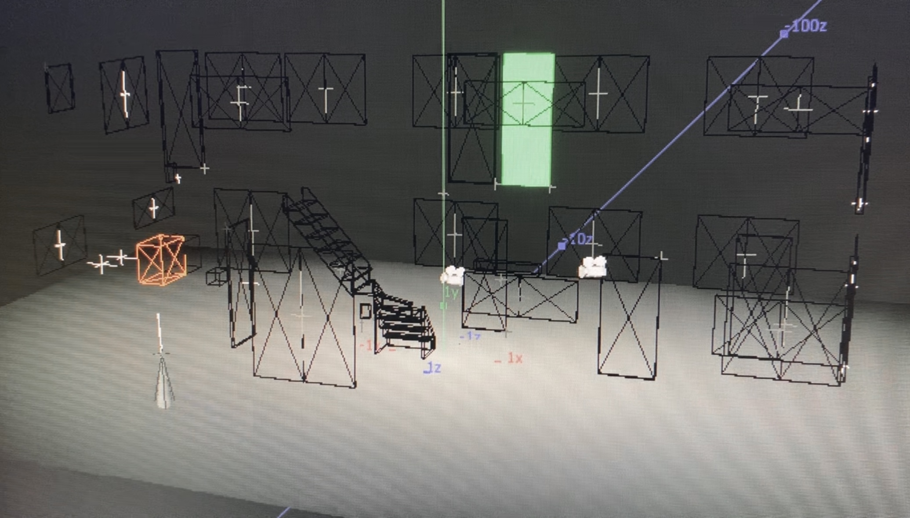

Space Delivery

Concept drawing by kai Matsuura

One day, the BOX arrived.
We deliver extraordinary spaces to you 📦
パンデミックの影響でオンライン開催となった学園祭に出展した、「空間を届ける」実験制作。
These are experimental works for an online school festival, adapted due to the spread of COVID-19.

placing objects and sounds simultaneously and applying sequences with TouchDesigner
新型コロナウイルスの流行によって、学園祭はオンライン開催を余儀なくされた。全ての出展がYoutubeによる配信に限定された中、オンライン配信という制約を、人々により大きな想像力と視点の自由を提供できるきっかけととらえ、友人と制作を進めた。
立体音響とCGを同時に制御する映像プログラムを開発し、環境音・物体からの視点、そして行動の伝染に焦点を当て、意識化する作品を制作した。
We hypothesized that the constraint of online platforms might actually provide people with greater imagination and freedom of perspective. To explore this, we created a piece focusing on ambient sounds, different perspectives on objects, and behavioral contagion by developing a video program that simultaneously controls 3D audio and computer graphics.
No.0 intro
No.1 Space Delivery
No.2 ie
最初は何者かが帰宅する様子が想像できるが、次第に現実にはない異常な状況へと変化する。
No.3 mikan
No.4 akubi
made with TouchDesigner
🖥️